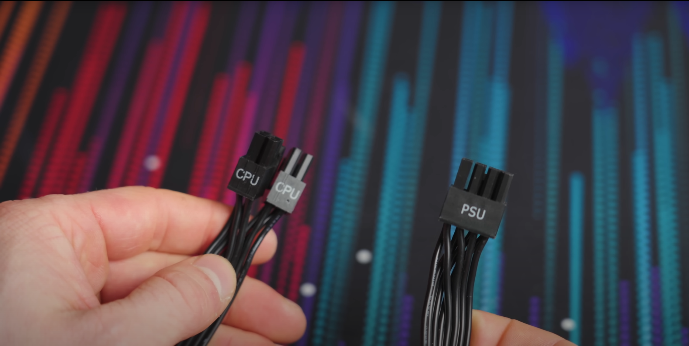
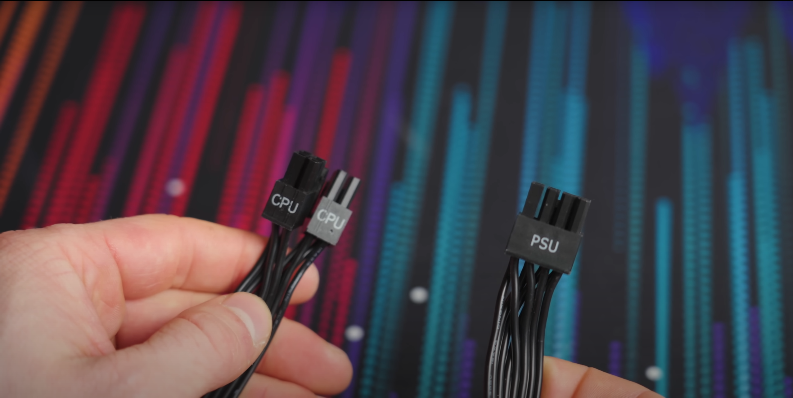

Make sure that the connection hub of the GPU is exposed on the outside of the case and flush with the IO panel of the motherboard. This is where all the HDMI connections to the monitor are located. Firmly press the GPU into the PCIe bus (it will generally be labeled on the motherboard). Fasten it in with the gates that are on either end of the PCIe slot. Fasten the connection HUB to the outside of the case with whatever hardware is provided. This will be specified in the owner’s manual for the GPU.
Installing the memory device; The instructions will be different depending on whether it is a solid-state drive or a hard disk drive; or both. If it is a solid-state drive, refer to the owner’s manual to determine if it is an NVME connection or a typical SATA connection. If it is a SATA connection, connect it to an open SATA port on the motherboard. If it is an NVME connection, insert the SSD into the NVME slot; which will be near the PCIe bus above or around where the GPU is installed.
Installing the power supply; In most cases, there is a dedicated shelf for the power supply. Place the power supply in this shelf. Make sure that power is given to the motherboard and the GPU. Connect the correct cables to these devices. Some motherboards will supply power automatically to the SSD. If this is not the case, connect the appropriate cables to the HDD or SSD. This will be specified in the owner’s manual of the mother board.
 
